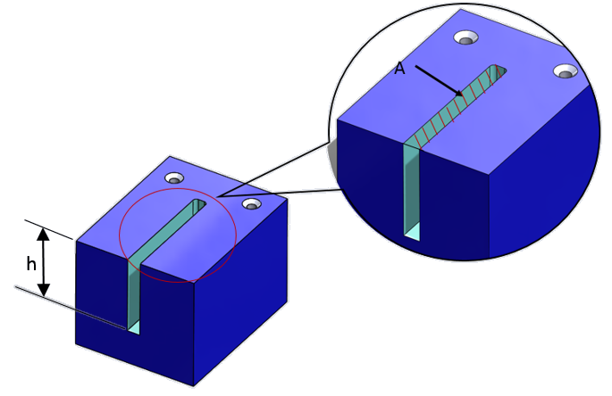

深くて狭いポケットおよびスロットの設計は避けてください。
深くて狭いポケットやスロットの加工には、より長い工具が必要となります。長い工具は破損しやすく、特に止まり穴（ブラインド形状）のポケットやスロットでは切りくず排出が困難になります。
深くて狭いスロットは、フライス加工において延長工具を必要とします。最適な加工を行うには、より大きな切込み深さと低い送り速度が必要であり、そうでない場合は工具に大きな負荷がかかり、工具寿命が低下します。
そのため、深くて狭いスロットは、各パスごとに指定された軸方向の切込み深さまで工具を進めながら、複数回のパスで加工されるのが一般的であり、これにより加工時間および全体コストが増加します。
したがって、このような形状は避けるべきです。
ユーザーが設定した比率を満たすように、ポケット／スロットの断面積を大きくする、または深さを浅くしてください。一般的なガイドラインとして、断面積と深さの比は 0.8 mm 以上であることが推奨されます。部品材料や使用可能な工具に基づいて、この値を設定することができます。
本ルールで使用される評価パラメータは、ポケット／スロットの断面積と深さの比率です。このパラメータの値は、設定可能な指定値以上に保つ必要があります。
デフォルトで設定されている値を確認するか、組織の標準に特化した設定を行うために、専門家の支援を受けてください。

ここで、
h = ポケット／スロットの深さ
A = ポケットの断面積